1次固定新背景拟合 · 同43,658训练行 · 排目标整座城市 · 归档发布延迟未知
完整结果 · 预定机制 · 分组误差 · 25对成功与不利事件 · 348工业日期 · 输入覆盖 · 实际源小时
区域地面监测融合；地图只移动背景均值，CS/GRAPH原道路与屋顶相对纹理保持。不是新增10m光学精度。
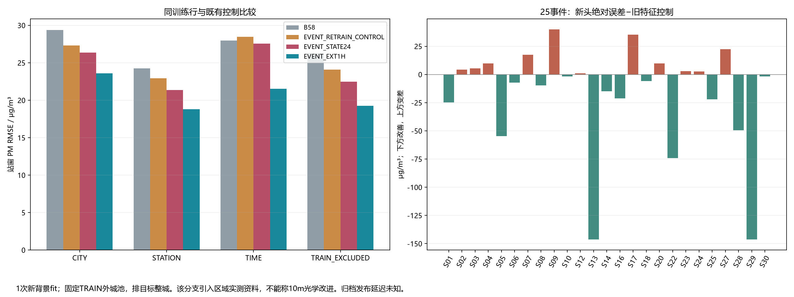
| group | stratum | method | n | RMSE | MAE | bias |
|---|---|---|---|---|---|---|
| CITY | ALL | B58 | 3106 | 29.3808 | 17.4715 | -1.6203 |
| CITY | ALL | B58_TRAIN_MEAN | 3106 | 29.4132 | 17.4102 | -2.1285 |
| CITY | ALL | EVENT_RETRAIN_CONTROL | 3106 | 27.3188 | 16.6351 | -1.6310 |
| CITY | ALL | EVENT_STATE24 | 3106 | 26.3510 | 15.9901 | -1.3637 |
| CITY | ALL | EVENT_EXT1H | 3106 | 23.6045 | 13.9680 | -0.5516 |
| STATION | ALL | B58 | 5083 | 24.2539 | 15.9191 | 0.4225 |
| STATION | ALL | B58_TRAIN_MEAN | 5083 | 24.2504 | 15.8382 | -0.0856 |
| STATION | ALL | EVENT_RETRAIN_CONTROL | 5083 | 22.9331 | 15.2113 | 0.6028 |
| STATION | ALL | EVENT_STATE24 | 5083 | 21.3632 | 14.2178 | 0.3719 |
| STATION | ALL | EVENT_EXT1H | 5083 | 18.8117 | 12.1846 | 0.0961 |
| TIME | ALL | B58 | 4703 | 27.9533 | 16.0317 | -1.9727 |
| TIME | ALL | B58_TRAIN_MEAN | 4703 | 27.9938 | 15.9743 | -2.4809 |
| TIME | ALL | EVENT_RETRAIN_CONTROL | 4703 | 28.4528 | 16.1271 | -1.9648 |
| TIME | ALL | EVENT_STATE24 | 4703 | 27.5410 | 15.1550 | -2.6837 |
| TIME | ALL | EVENT_EXT1H | 4703 | 21.5097 | 12.5915 | -1.2890 |
| TRAIN_EXCLUDED | ALL | B58 | 5216 | 26.2812 | 17.6235 | 0.8968 |
| TRAIN_EXCLUDED | ALL | B58_TRAIN_MEAN | 5216 | 26.2688 | 17.5306 | 0.3887 |
| TRAIN_EXCLUDED | ALL | EVENT_RETRAIN_CONTROL | 5216 | 24.0700 | 16.2166 | -0.0788 |
| TRAIN_EXCLUDED | ALL | EVENT_STATE24 | 5216 | 22.4858 | 15.2501 | -0.1403 |
| TRAIN_EXCLUDED | ALL | EVENT_EXT1H | 5216 | 19.2764 | 12.9177 | 0.2825 |
| method | pairs | event_RMSE | event_MAE | mean_observed_delta | mean_predicted_delta | positive_delta_pairs |
|---|---|---|---|---|---|---|
| B58 | 25 | 78.042 | 51.719 | 77.12 | 29.354 | 23 |
| B58_TRAIN_MEAN | 25 | 78.042 | 51.719 | 77.12 | 29.354 | 23 |
| COMPACT_GRAPH_TENSOR | 25 | 77.421 | 50.763 | 77.12 | 30.284 | 23 |
| CS_CONSISTENT_STATE | 25 | 77.412 | 50.758 | 77.12 | 30.290 | 23 |
| EVENT_EXT1H | 25 | 37.267 | 29.950 | 77.12 | 57.577 | 24 |
| EVENT_EXT1H_CS | 25 | 37.268 | 29.947 | 77.12 | 57.569 | 24 |
| EVENT_EXT1H_GRAPH | 25 | 37.268 | 29.947 | 77.12 | 57.569 | 24 |
| EVENT_RETRAIN_CONTROL | 25 | 72.290 | 47.129 | 77.12 | 34.220 | 23 |
| EVENT_RETRAIN_CONTROL_CS | 25 | 72.292 | 47.128 | 77.12 | 34.213 | 23 |
| EVENT_STATE24 | 25 | 77.283 | 52.389 | 77.12 | 32.319 | 23 |
| RAW | 25 | 77.405 | 50.783 | 77.12 | 30.269 | 23 |
| site_id | observed_delta_external | predicted_delta_control | predicted_delta_external | external_minus_control_abs_error |
|---|---|---|---|---|
| S05_jiaozuo_1829A | 84.0 | -10.303 | 44.458 | -54.761 |
| S09_nantong_1168A | 53.0 | 10.457 | -29.423 | 39.880 |
| S13_yangquan_1742A | 205.0 | 25.031 | 171.394 | -146.363 |
| S22_jiaozuo_3169A | 99.0 | -10.303 | 63.943 | -74.246 |
| S29_yangquan_1738A | 250.0 | 25.031 | 171.394 | -146.363 |
同两日RAW色限、同原支持；高背景超界时仅显示饱和，原数值不裁切。早已曝光的对照，原B58历史来源沿用。
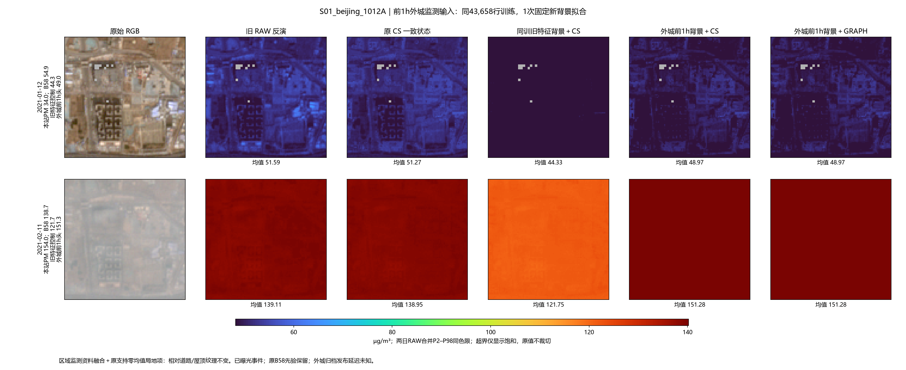
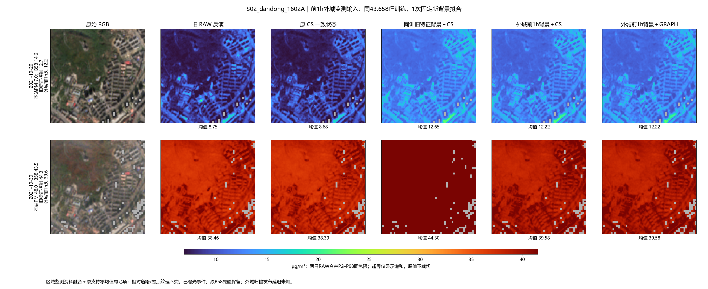
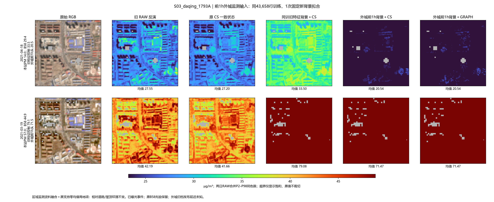
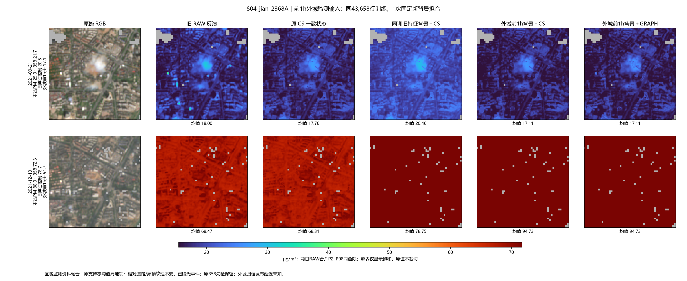
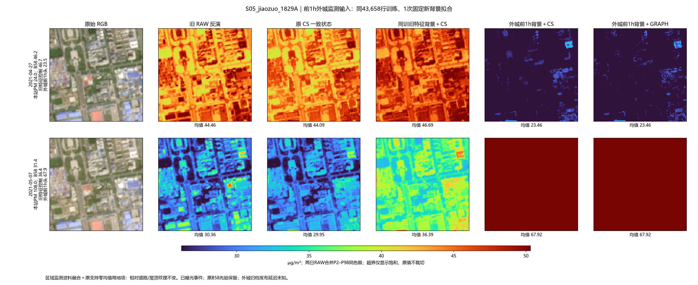
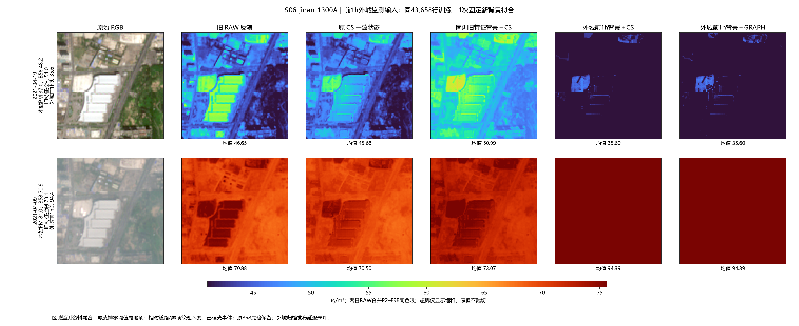
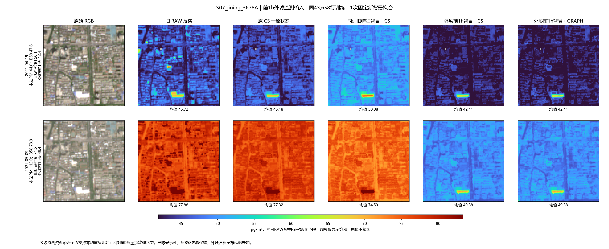
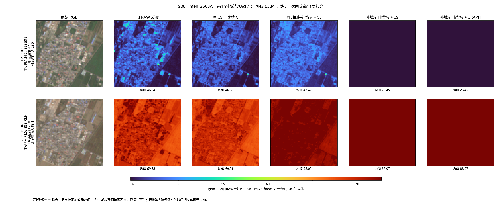
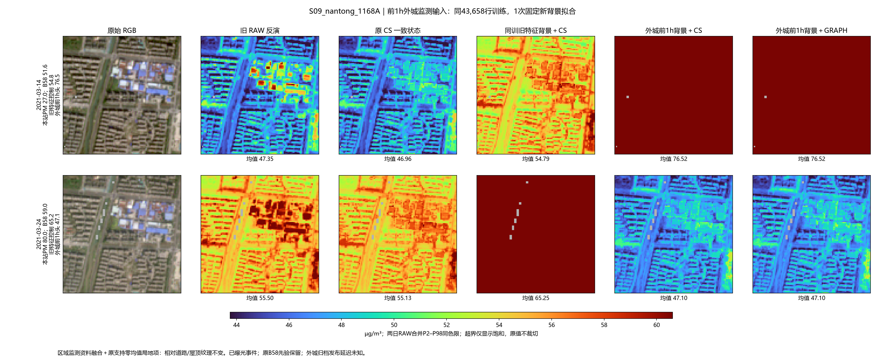
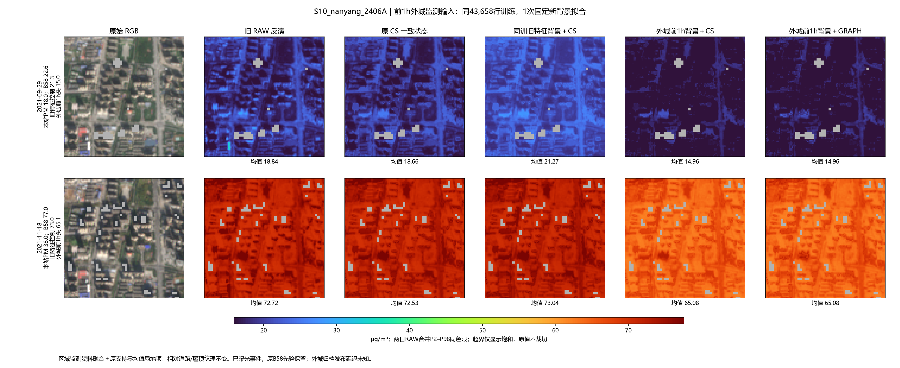
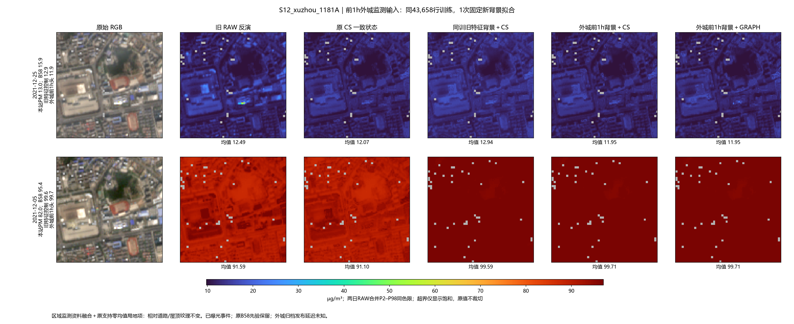
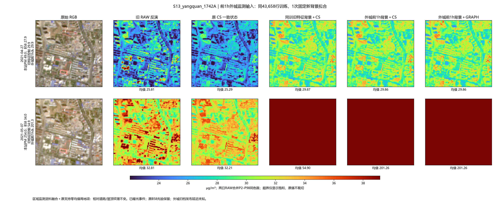
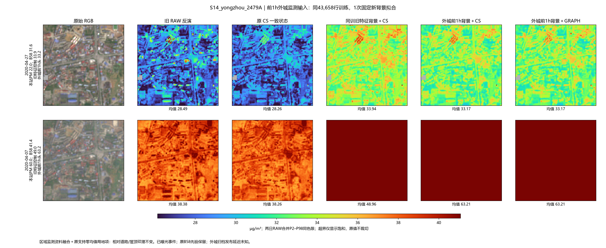
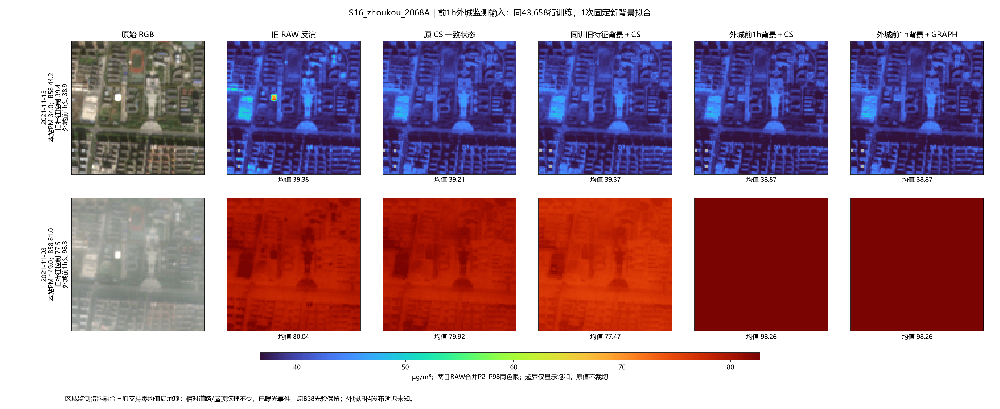
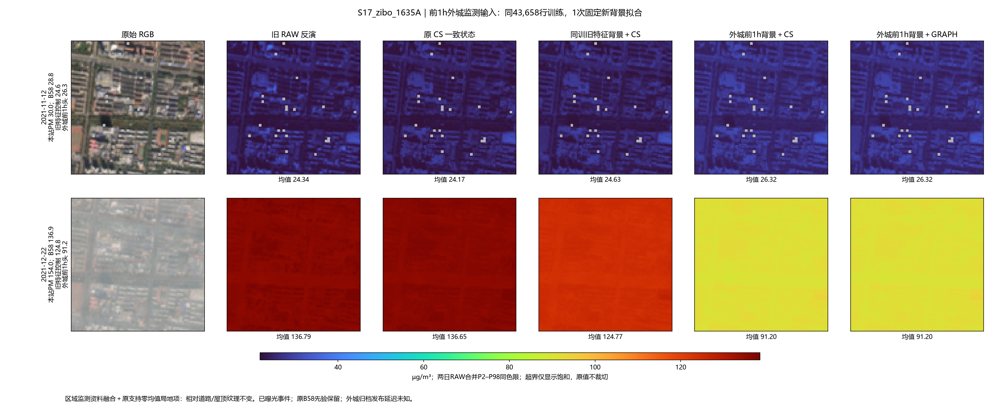
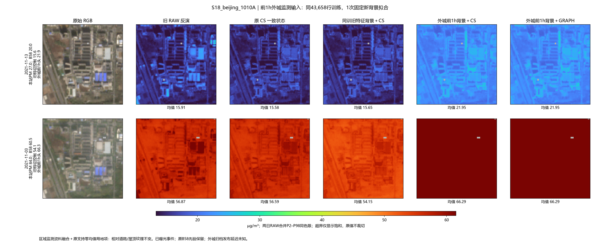
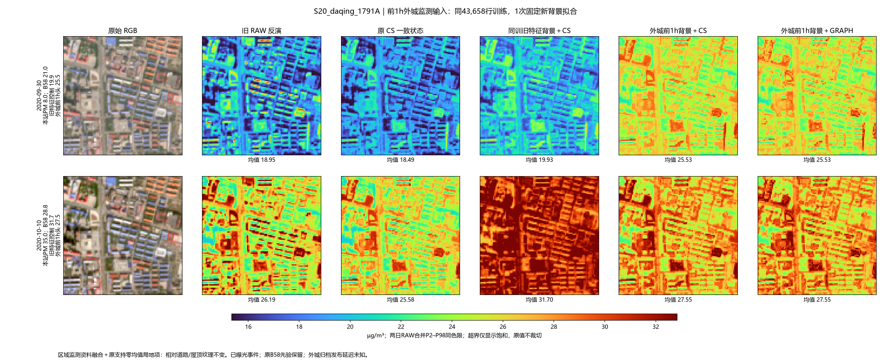
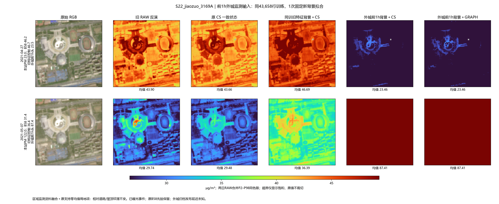
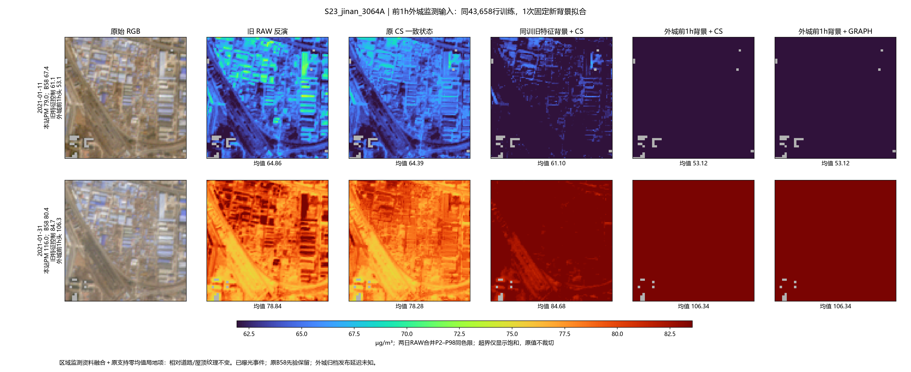
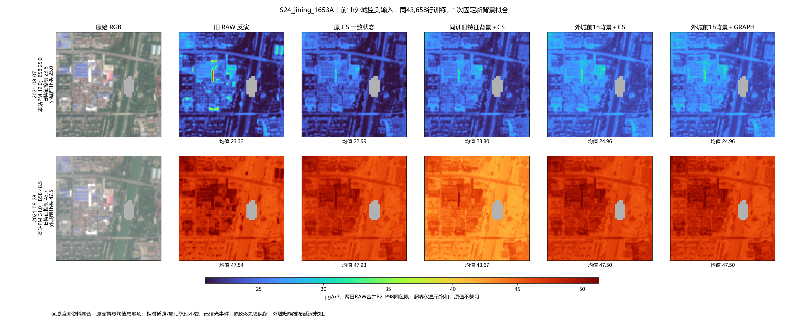
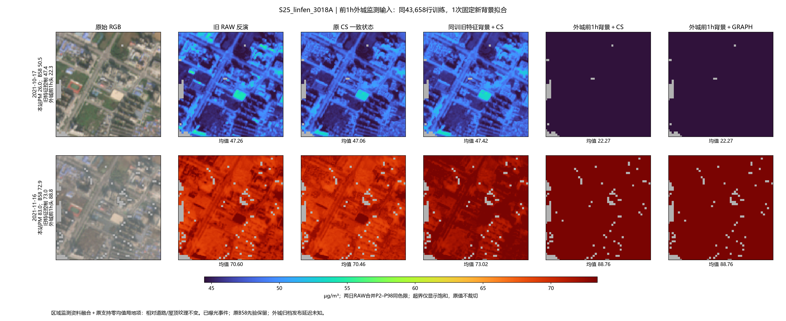
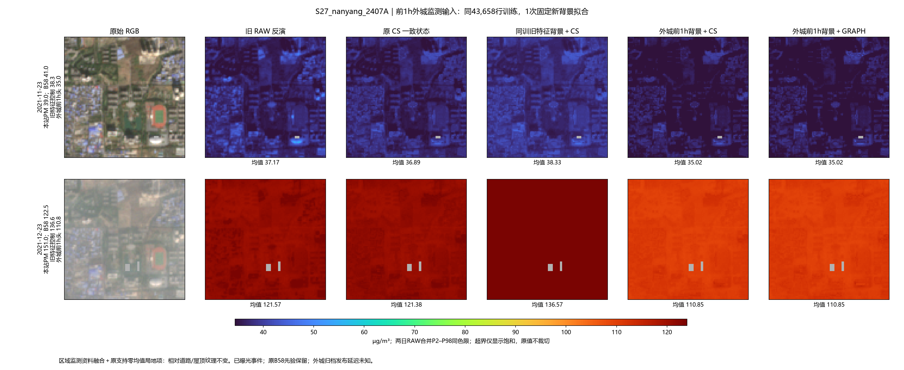
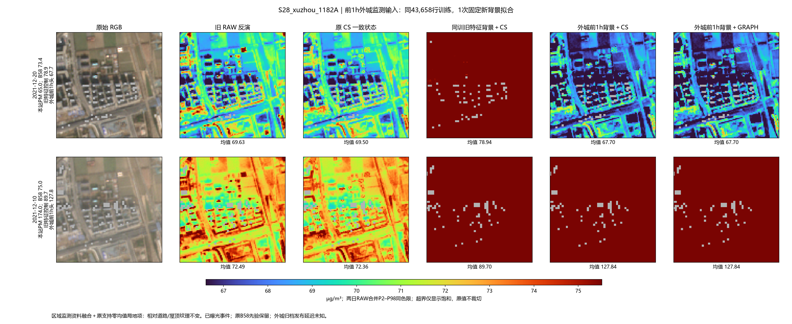
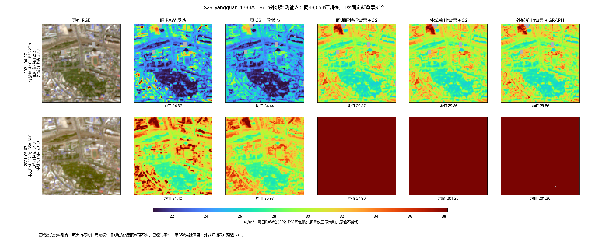
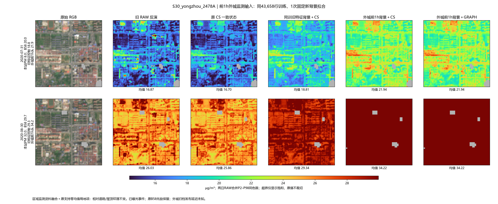